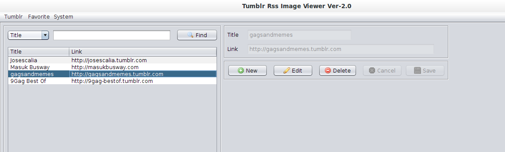

2. Tumblr Rss Favorite List
This form is created to maintain your favorite Tumblr blog list, you can add, edit, delete your favorite tumblr link using this form. It's standard CRUD (Create, Read, Edit, Delete) operation of the data. But one thing for sure, all of your saved Tumblr blog link will be displayed here, even you use the Tumblr Rss Image Viewer form when saving your favorite Tumblr blog link. This Tumblr list link will be displayed as a dialog form when you load the list from the Tumblr Rss Image Viewer Form by clicking the Load button, and then you can select one of this list to fetch the Tumblr blog post. 